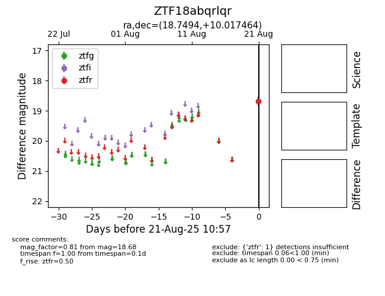

Target ZTF18abqrlqr at 2025-08-21 10:57, see:
FINK: fink-portal.org/ZTF18abqrlqr
Lasair: lasair-ztf.lsst.ac.uk/objects/ZTF18abqrlqr
ALeRCE: alerce.online/object/ZTF18abqrlqr
alt names
ZTF18abqrlqr (ztf,alerce)
coordinates:
equatorial (ra, dec) = (18.7494,+10.01746)
galactic (l, b) = (132.4691,-52.41746)
photometry
last ztfr=18.68
1 ztfr detections
